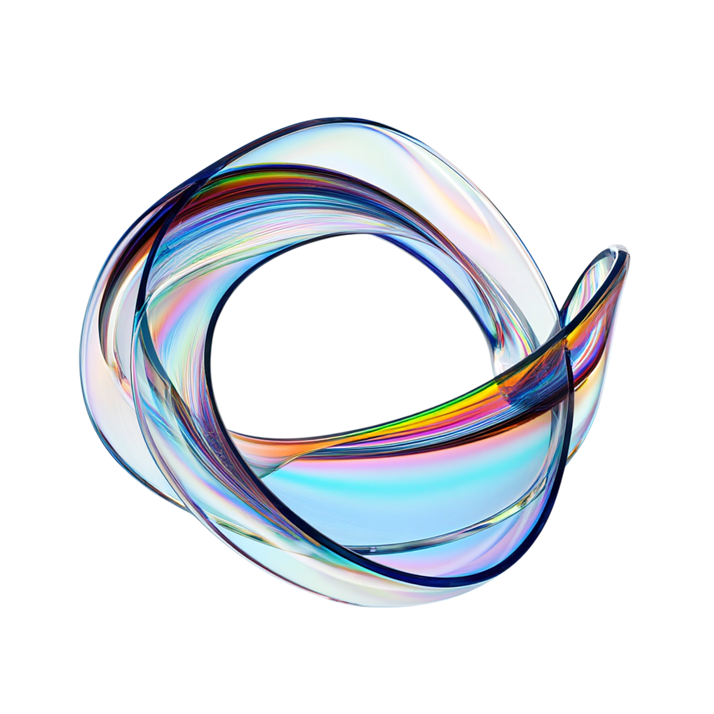

05
Your Quick Wins, In Order

Week 1
Start one weekly NPS pulse
1
Month 1
Open a shared pain-point backlog
2
Month 2
Personalize pre-trip communication
3
Month 3-4
Define one cross-channel standard
4